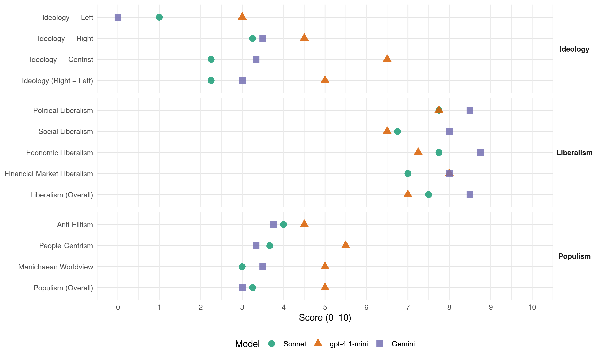

AP (Spain, 1986)
manifesto_id 33610_198606
Get full text: This site shows derived annotations and short verbatim quotes only. The full manifesto text is © Manifesto Project / WZB — obtain it via manifesto-project.wzb.eu using the manifesto_id above.
Headline scores
| Dimension | Sonnet | gpt-4.1-mini | Gemini |
|---|---|---|---|
| Populism (Overall) | 3.2 | 5.0 | 3.0 |
| Anti-Elitism | 4.0 | 4.5 | 3.8 |
| People-Centrism | 3.7 | 5.5 | 3.3 |
| Manichaean Worldview | 3.0 | 5.0 | 3.5 |
| Ideology (Right − Left) | 2.2 | 5.0 | 3.0 |
| Liberalism (Overall) | 7.5 | 7.0 | 8.5 |
| Political Liberalism | 7.8 | 7.8 | 8.5 |
| Social Liberalism | 6.8 | 6.5 | 8.0 |
| Economic Liberalism | 7.8 | 7.2 | 8.8 |
| Financial-Market Liberalism | 7.0 | 8.0 | 8.0 |
Evidence per dimension
Economic Liberalism
Gemini · score 9.0 · verified · chunk 1
“economía de mercado, la eficacia”
individual y social, la economía de mercado, la eficacia en la gestión
Gemini · score 8.0 · verified · chunk 2
“libre juego de las fuerzas productivas”
indicativa y a partir de un desarrollo económico espontáneo, producido por el libre juego de las fuerzas productivas.
Gemini · score 9.0 · verified · chunk 3
“superioridad de la economía de mercado”
Firmemente convencidos de la superioridad de la economía de mercado, creemos que el transporte debe seguir sus reglas
Gemini · score 9.0 · verified · chunk 4
“sólo la iniciativa individual y la actividad privada”
Sin embargo, sólo la iniciativa individual y la actividad privada, negadas o sofocadas por la doctrina socialista, son capaces de asegurar
gpt-4.1-mini · score 9.0 · verified · chunk 1
“creemos en la economía de mercado, la eficacia en la gestión y la modernización del Estado”
…Nosotros no tenemos nada que ocultar: creemos en la democracia, la libertad de cada persona, la igualdad de oportunidades, la responsabilidad individual y social, la economía de mercado, la eficacia en la gestión y la modernización del Estado…
gpt-4.1-mini · score 7.0 · verified · chunk 2
“la economía libre y solidaria de la que es uno de sus componentes sustanciales”
que el modelo de la Seguridad Social se inserte en la concepción general de una economía libre y solidaria de la que es uno de sus componentes sustanciales y que su reforma debe ser completa, no de reajustes parciales,
gpt-4.1-mini · score 8.0 · verified · chunk 3
“la libertad económica, consagrada en el derecho de propiedad y a través de la libertad de empresa”
Es fundamento de la libertad así entendida la libertad económica, consagrada en el derecho de propiedad y a través de la libertad de empresa. Esta base material de la libertad no es sólo la propiedad misma, sino la posibilidad de adquirirla l mediante el ejercicio libre de la profesión, de la iniciativa y del ahorro, de arriesgarla y aumentarla por la inversión y el beneficio, de perpetuarla por la herencia o de sublimarla creando una fundación de interés general.
gpt-4.1-mini · score 5.0 · verified · chunk 4
“la peseta pierde valor adquisitivo y que la presión fiscal devora”
…ha permitido un desmedido aumento de los precios, sobre todo de los artículos de primera necesidad, ha disminuido gravemente la capacidad de compra de los españoles, ha deteriorado el sistema de la Seguridad Social, ha acelerado la crisis de los servicios públicos ha reducido las pensiones que percibirán los trabajadores jubilados y ha agravado los desequilibrios internos de la economía española al tolerar un crecimiento suicida del gasto público, que no se destina a inversiones productivas sino a tapar agujeros sin fondo, en tanto que la peseta pierde valor adquisitivo y que la presión fiscal devora las posibilidades tanto de ahorro como de inversión.
Sonnet · score 9.0 · verified · chunk 1
“libertad de mercados y de renovación permanente”
la falta de actividad económica e inversora suficiente en un contexto de libertad de mercados y de renovación permanente
Sonnet · score 7.0 · verified · chunk 2
“libre juego de las fuerzas productivas”
a partir de un desarrollo económico espontáneo, producido por el libre juego de las fuerzas productivas
Sonnet · score 8.0 · verified · chunk 3
“superioridad de la economía de mercado”
Firmemente convencidos de la superioridad de la economía de mercado, creemos que el transporte debe seguir sus reglas
Sonnet · score 7.0 · verified · chunk 4
“la iniciativa individual y la actividad privada”
sólo la iniciativa individual y la actividad privada, negadas o sofocadas por la doctrina socialista, son capaces de asegurar el pluralismo social
Financial-Market Liberalism
Gemini · score 9.0 · verified · chunk 1
“liberalizar y modernizar la asignación de recursos financieros”
propuesta es la de liberalizar y modernizar la asignación de recursos financieros con criterios
Gemini · score 7.0 · verified · chunk 2
“estimular la formación del ahorro”
para estimular la formación del ahorro entre los agricultores y su posterior inversión en lo rural.
Gemini · score 8.0 · verified · chunk 3
“mercado secundario de hipotecas eficaz”
dueñas de su propio hogar mediante condiciones favorables de financiación entre las que cabe resaltar un mercado secundario de hipotecas eficaz y real, anualidades de amortización crecientes
Gemini · score 8.0 · verified · chunk 4
“la de movimiento de capitales y la”
la de circulación de mercancías, la de movimiento de capitales y la de establecimiento y prestación de servicios.
gpt-4.1-mini · score 8.0 · verified · chunk 1
“liberalizará la asignación de recursos para que puedan éstos financiar las inversiones productivas”
…El sistema financiero, con los socialistas, ha pasado a que el Estado administre el 55 % de los depósitos bancarios… Frente a esta realidad nuestra alternativa liberalizará la asignación de recursos para que puedan éstos financiar las inversiones productivas, creadoras de progreso y por tanto de empleo…
Sonnet · score 9.0 · verified · chunk 1
“liberalizar la circulación de capitales”
La inmersión de España en el mundo económico moderno exige hoy la liberalización de la circulación de capitales.
Sonnet · score 6.0 · verified · chunk 2
“sociedades de garantía recíproca en empresas agrarias”
Se crearán también sociedades de promoción y participación agrarias para impulsar el desarrollo agro-industrial, así como sociedades de garantía recíproca en empresas agrarias
Sonnet · score 7.0 · verified · chunk 3
“mercado secundario de hipotecas eficaz y real”
condiciones favorables de financiación entre las que cabe resaltar un mercado secundario de hipotecas eficaz y real, anualidades de amortización crecientes
Sonnet · score 6.0 · verified · chunk 4
“la de movimiento de capitales”
la de circulación de trabajadores, la de circulación de mercancías, la de movimiento de capitales y la de establecimiento y prestación de servicios
Political Liberalism
Gemini · score 9.0 · verified · chunk 1
“creemos en la Constitución, en la misión”
Comunidades Autónomas; creen en la Constitución, en la misión, unificadora de
Gemini · score 8.0 · verified · chunk 2
“salvaguardar la libertad de expresión”
Pretendemos, ante todo, salvaguardar la libertad de expresión y que se establezca así, espontáneamente, un amplio
Gemini · score 9.0 · verified · chunk 3
“sistema político de democracia pluralista”
Sólo un sistema político de democracia pluralista puede realizar aquellos valores que, basados en la persona
Gemini · score 8.0 · verified · chunk 4
“el principio esencial de la división de poderes”
y el Poder Judicial es seriamente agredido por un Gobierno que se niega a aceptar el principio esencial de la división de poderes.
gpt-4.1-mini · score 8.0 · verified · chunk 1
“creemos en la democracia, la libertad de cada persona, la igualdad de oportunidades”
…Demostraremos también ser un Gobierno eficaz fiable, democrático y respetuoso con la libertad porque creemos en el valor y dignidad de la persona humana… Nosotros no tenemos nada que ocultar: creemos en la democracia, la libertad de cada persona, la igualdad de oportunidades, la responsabilidad individual y social…
gpt-4.1-mini · score 8.0 · verified · chunk 2
“la Constitución, articulo 59, hay que adoptar una política amplia respecto a la Tercera Edad”
Por imperativo de nuestro texto constitucional, articulo 59, hay que adoptar una política amplia respecto a la Tercera Edad, que abarque desde el establecimiento de unas pensiones suficientes y dignas, hasta una asistencia sanitaria adecuada, pasando por las actividades culturales y recreativas.
gpt-4.1-mini · score 9.0 · verified · chunk 3
“sociedades democráticas proporcionan a los individuos de todo el mundo las mejores condiciones para la libertad política y personal igualdad de oportunidades y desarrollo económico bajo el imperio de la ley”
10. UNA SOCIEDAD DEMOCRÁTICA, LIBRE Y RESPONSABLE. Las sociedades democráticas proporcionan a los individuos de todo el mundo las mejores condiciones para la libertad política y personal igualdad de oportunidades y desarrollo económico bajo el imperio de la ley.» Hacemos nuestra esta declaración de principios de la Unión Democrática Internacional en la que estamos integrados como miembro español y cofundador.
gpt-4.1-mini · score 6.0 · verified · chunk 4
“un régimen democrático por su libre voluntad”
…Un pueblo que ha sido capaz de suscitar la admiración del mundo dándose, bajo el aliento de la Corona, un régimen democrático por su libre voluntad, no por presiones internas externas, y que ha mostrado su madurez y capacidad para autorregirse, es un gran pueblo al que no puede defraudarse, en el que se puede confiar, que se halla pleno de posibilidades en todos los órdenes.
Sonnet · score 8.0 · verified · chunk 1
“creemos en la democracia, la libertad de cada persona”
Nosotros no tenemos nada que ocultar: creemos en la democracia, la libertad de cada persona, la igualdad de oportunidades, la responsabilidad individual y social, la economía de mercado
Sonnet · score 7.0 · verified · chunk 2
“libertad de expresión y que se establezca así”
Pretendemos, ante todo, salvaguardar la libertad de expresión y que se establezca así, espontáneamente, un amplio y genuino pluralismo de opinión
Sonnet · score 9.0 · verified · chunk 3
“democracia pluralista puede realizar aquellos valores”
Sólo un sistema político de democracia pluralista puede realizar aquellos valores que, basados en la persona, hacen posible su libertad y su realización individual y social
Sonnet · score 7.0 · verified · chunk 4
“el principio esencial de la división de poderes”
el Poder Judicial es seriamente agredido por un Gobierno que se niega a aceptar el principio esencial de la división de poderes
Liberalism (Overall)
Gemini · score 9.0 · verified · chunk 1
“economía de mercado, la eficacia”
individual y social, la economía de mercado, la eficacia en la gestión
Gemini · score 8.0 · verified · chunk 2
“libre juego de las fuerzas productivas”
indicativa y a partir de un desarrollo económico espontáneo, producido por el libre juego de las fuerzas productivas.
Gemini · score 9.0 · verified · chunk 3
“superioridad de la economía de mercado”
Firmemente convencidos de la superioridad de la economía de mercado, creemos que el transporte debe seguir sus reglas
Gemini · score 8.0 · verified · chunk 4
“sólo la iniciativa individual y la actividad privada”
Sin embargo, sólo la iniciativa individual y la actividad privada, negadas o sofocadas por la doctrina socialista, son capaces de asegurar
gpt-4.1-mini · score 8.0 · verified · chunk 1
“creemos en la democracia, la libertad de cada persona, la igualdad de oportunidades”
…Nosotros no tenemos nada que ocultar: creemos en la democracia, la libertad de cada persona, la igualdad de oportunidades, la responsabilidad individual y social, la economía de mercado, la eficacia en la gestión y la modernización del Estado…
gpt-4.1-mini · score 7.0 · verified · chunk 2
“la Seguridad Social se inserte en la concepción general de una economía libre y solidaria”
que el modelo de la Seguridad Social se inserte en la concepción general de una economía libre y solidaria de la que es uno de sus componentes sustanciales y que su reforma debe ser completa, no de reajustes parciales,
gpt-4.1-mini · score 8.0 · verified · chunk 3
“sociedades democráticas proporcionan a los individuos de todo el mundo las mejores condiciones para la libertad política y personal igualdad de oportunidades y desarrollo económico bajo el imperio de la ley”
10. UNA SOCIEDAD DEMOCRÁTICA, LIBRE Y RESPONSABLE. Las sociedades democráticas proporcionan a los individuos de todo el mundo las mejores condiciones para la libertad política y personal igualdad de oportunidades y desarrollo económico bajo el imperio de la ley.» Hacemos nuestra esta declaración de principios de la Unión Democrática Internacional en la que estamos integrados como miembro español y cofundador.
gpt-4.1-mini · score 5.0 · verified · chunk 4
“un régimen democrático por su libre voluntad”
…Un pueblo que ha sido capaz de suscitar la admiración del mundo dándose, bajo el aliento de la Corona, un régimen democrático por su libre voluntad, no por presiones internas externas, y que ha mostrado su madurez y capacidad para autorregirse, es un gran pueblo al que no puede defraudarse, en el que se puede confiar, que se halla pleno de posibilidades en todos los órdenes.
Sonnet · score 8.0 · verified · chunk 1
“economía de mercado, la eficacia en la gestión”
creemos en la democracia, la libertad de cada persona, la igualdad de oportunidades, la responsabilidad individual y social, la economía de mercado, la eficacia en la gestión
Sonnet · score 7.0 · verified · chunk 2
“libertad de empresa y de actividad profesional”
De ahí que mantengamos también las libertades de empresa y de actividad profesional - que presuponen las de elección, especialización y ejercicio profesionales- la complementariedad de la empresa pública con la privada
Sonnet · score 8.0 · verified · chunk 3
“democracia pluralista puede realizar aquellos valores”
Sólo un sistema político de democracia pluralista puede realizar aquellos valores que, basados en la persona, hacen posible su libertad y su realización individual y social
Sonnet · score 7.0 · verified · chunk 4
“la libertad, la confianza en la sociedad”
estimularemos la libertad, la confianza en la sociedad, la iniciativa, la eficacia, la calidad, el riesgo, la capacidad creadora
Anti-Elitism
Gemini · score 4.0 · verified · chunk 1
“mediocridad de la vida pública española”
De ahí la mediocridad de la vida pública española a caballo entre el amiguismo
Gemini · score 4.0 · verified · chunk 2
“el Gobierno socialista ha operado tanto en subvenciones”
sancionadoras de hecho y a las que se añade la disminución que el Gobierno socialista ha operado tanto en subvenciones directas como en préstamos.
Gemini · score 4.0 · verified · chunk 3
“manipulación actual por el socialismo”
televisión han corrido ríos de tinta y su manipulación actual por el socialismo es tan ostensible que no merece la pena
Gemini · score 3.0 · verified · chunk 4
“el absolutismo parlamentario de la mayoría”
En materia de prácticas democráticas, los hechos no parecen haberlo probado el absolutismo parlamentario de la mayoría, que desatiende sistemáticamente las razones de las minorías
gpt-4.1-mini · score 6.0 · verified · chunk 1
“la mediocridad de la vida pública española a caballo entre el amiguismo y el cansado cultivo del tópico”
…igualitarismo, aferramiento al trozo de tarta obtenido o por obtener, rutina burocrática, soluciones prefabricadas y paternalismo conductor. De ahí la mediocridad de la vida pública española a caballo entre el amiguismo y el cansado cultivo del tópico. Para los problemas actuales el socialismo carece de fórmulas; por ello, cuando gobierna, tiene que pedirlas prestadas a su derecha. No hay que hacer un gran esfuerzo para darse cuenta de qué color son los pocos aciertos del Gobierno…
gpt-4.1-mini · score 3.0 · verified · chunk 4
“la simplificada división de las gentes en buenas y malas”
…de agresiones verbales, de acusaciones ficticias o simples infundios. Se juega al asalto por descalificación, usando cualquier medio. Como una ilustre personalidad escribió no hace mucho para Francia, jamás un hombre de la derecha ha dicho lo que han dicho algunos Ministros, algunos Presidentes de Comunidad Autónoma, algunos Alcaldes socialistas. Si los modos no son los correctos, menos lo es la atmósfera de enfrentamiento, la simplificada división de las gentes en buenas y malas que, sin embargo, no es ni ilógica ni sorprendente en quienes comulgan en determinada ideología. Pues, si el concepto de clase está ya anticuado, no por abandonar el término deja de persistir la idea, esto es, dividir a los hombres de modo maniqueo en dos grupos, que como no son ya los de explotadores y explotados u opresores y oprimidos - menos ahora, cuando según el esquema mandarían los segundos- deben ser los amigos y los adversarios, los favorables o los contrarios al cambio, es decir, los buenos y los malos. Todo ello conduce a la incertidumbre personal y Social porque el ambiente así creado no genera confianza precisamente.
Sonnet · score 4.0 · mixed · chunk 1
“amiguismo y el cansado cultivo del tópico”
De ahí la mediocridad de la vida pública española a caballo entre el amiguismo y el cansado cultivo del tópico.
Sonnet · score 3.0 · verified · chunk 2
“el Gobierno socialista ha operado tanto en subvenciones”
cargas sancionadoras de hecho y a las que se añade la disminución que el Gobierno socialista ha operado tanto en subvenciones directas como en préstamos
Sonnet · score 4.0 · verified · chunk 3
“manipulación actual por el socialismo es tan ostensible”
Sobre el manejo de televisión han corrido ríos de tinta y su manipulación actual por el socialismo es tan ostensible que no merece la pena añadir una palabra más
Sonnet · score 5.0 · verified · chunk 4
“el absolutismo parlamentario de la mayoría”
En materia de prácticas democráticas, los hechos no parecen haberlo probado el absolutismo parlamentario de la mayoría, que desatiende sistemáticamente las razones de las minorías
Ideology — Centrist
Gemini · score 5.0 · verified · chunk 1
“recoge las aspiraciones básicas de nuestro pueblo”
popular, porque recoge las aspiraciones básicas de nuestro pueblo; conservador de
Gemini · score 3.0 · verified · chunk 3
“Como fuerza popular, reformista”
como Oposición, interrogamos sobre esos temas o preguntamos sobre algunas presuntas violaciones o sobre el i destino de españoles desaparecidos en países extranjeros. Hemos solicitado también por eso la comparecencia ante el Congreso del Defensor del Pueblo. Como fuerza popular, reformista, liberal-conservadora e interclasista somos los mejores servidores
Gemini · score 2.0 · verified · chunk 4
“la derecha moderna centrada, moderada, reformista”
también los de la derecha moderna centrada, moderada, reformista y democrática, son partidos de clases medias
gpt-4.1-mini · score 8.0 · verified · chunk 1
“posiciones moderadas concitan la ilusión desde la realidad y no desde el engaño”
…Si creyéramos que tal izquierda sirve mejor a la justicia social seriamos hombres de izquierda. Pero sabemos que solamente posiciones moderadas concitan la ilusión desde la realidad y no desde el engaño; y confirman luego esa ilusión, que el socialismo ha defraudado…
gpt-4.1-mini · score 5.0 · verified · chunk 4
“la integración de la derecha centrada, reformista y democrática”
…La integración de la derecha centrada, reformista y democrática. Estamos abiertos a los puntos de vista de las fuerzas no socialistas; no rechazamos - algunos muy importantes tenemos suscritos ya- pactos, pre o post-electorales con agrupaciones políticas coincidentes en la defensa del mismo modelo social básico.
Sonnet · score 2.0 · verified · chunk 1
“posiciones moderadas concitan la ilusión”
sabemos que solamente posiciones moderadas concitan la ilusión desde la realidad y no desde el engaño
Sonnet · score 2.0 · verified · chunk 2
“partimos del realismo, no de la utopía”
Pero partimos del realismo, no de la utopía, ni del dogma, ni de los postulados ideológicos.
Sonnet · score 2.0 · verified · chunk 3
“fuerza popular, reformista, liberal-conservadora e interclasista”
Como fuerza popular, reformista, liberal-conservadora e interclasista somos los mejores servidores y los más fieles y eficaces garantes de un sistema de libertades real
Sonnet · score 3.0 · verified · chunk 4
“derecha centrada, reformista y democrática”
La integración de la derecha centrada, reformista y democrática. Estamos abiertos a los puntos de vista de las fuerzas no socialistas
Ideology — Left
Gemini · score 0.0 · verified · chunk 4
“la doctrina socialista, son capaces de asegurar”
sólo la iniciativa individual y la actividad privada, negadas o sofocadas por la doctrina socialista, son capaces de asegurar el pluralismo social
gpt-4.1-mini · score 3.0 · verified · chunk 1
“el socialismo es una respuesta vieja - que Europa va superando”
…Con el socialismo los problemas no se resuelven, se agravan. No hay que sorprenderse; pese a su despliegue de aparente modernidad, el socialismo es una respuesta vieja - que Europa va superando -, incapaz de satisfacer el desafío de la nueva era tecnológica que exige riesgo, iniciativa, imaginación…
gpt-4.1-mini · score 3.0 · verified · chunk 4
“la socialización del país, generalmente perjudicial, es reversible”
…pero no nos equivoquemos, esa moderación es solamente la cara transitoria del PSOE. La socialización del país, generalmente perjudicial, es reversible si la opción contraria llega al Poder en tiempo oportuno; pero se convertirá casi en irreversible si los socialistas se instalan en el Poder durante dos legislaturas consecutivas.
Sonnet · score 1.0 · verified · chunk 1
“redistribuir la riqueza, crear unas justas condiciones”
Nuestros propósitos en una economía maltratada como la nuestra son también afirmar el poder de compra restaurar el valor del dinero, reducir el gasto públicos reformar la fiscalidad, redistribuir la riqueza, crear unas justas condiciones de trabajo
Sonnet · score 1.0 · verified · chunk 2
“lucha por la justicia social”
pero la lucha por la justicia social, como ha quedado definida, exige una especial atención pública hacia los sectores que más lo necesitan
Sonnet · score 1.0 · verified · chunk 3
“libertad económica, consagrada en el derecho de propiedad”
Es fundamento de la libertad así entendida la libertad económica, consagrada en el derecho de propiedad y a través de la libertad de empresa
Sonnet · score 1.0 · verified · chunk 4
“la iniciativa individual y la actividad privada”
sólo la iniciativa individual y la actividad privada, negadas o sofocadas por la doctrina socialista, son capaces de asegurar el pluralismo social
Ideology (Right − Left)
Gemini · score 4.0 · verified · chunk 1
“recoge las aspiraciones básicas de nuestro pueblo”
popular, porque recoge las aspiraciones básicas de nuestro pueblo; conservador de
Gemini · score 2.0 · verified · chunk 3
“Como fuerza popular, reformista”
como Oposición, interrogamos sobre esos temas o preguntamos sobre algunas presuntas violaciones o sobre el i destino de españoles desaparecidos en países extranjeros. Hemos solicitado también por eso la comparecencia ante el Congreso del Defensor del Pueblo. Como fuerza popular, reformista, liberal-conservadora e interclasista somos los mejores servidores
Gemini · score 3.0 · verified · chunk 4
“la derecha moderna centrada, moderada, reformista”
también los de la derecha moderna centrada, moderada, reformista y democrática, son partidos de clases medias
gpt-4.1-mini · score 6.0 · verified · chunk 1
“posiciones moderadas concitan la ilusión desde la realidad y no desde el engaño”
…Si creyéramos que tal izquierda sirve mejor a la justicia social seriamos hombres de izquierda. Pero sabemos que solamente posiciones moderadas concitan la ilusión desde la realidad y no desde el engaño; y confirman luego esa ilusión, que el socialismo ha defraudado…
gpt-4.1-mini · score 4.0 · verified · chunk 4
“la integración de la derecha centrada, reformista y democrática”
…La integración de la derecha centrada, reformista y democrática. Estamos abiertos a los puntos de vista de las fuerzas no socialistas; no rechazamos - algunos muy importantes tenemos suscritos ya- pactos, pre o post-electorales con agrupaciones políticas coincidentes en la defensa del mismo modelo social básico.
Sonnet · score 2.0 · verified · chunk 1
“modelo liberal-conservador, cuyos éxitos internacionales”
el modelo liberal-conservador, cuyos éxitos internacionales contrastan con los fracasos del socialismo
Sonnet · score 2.0 · verified · chunk 2
“Nuestro Partido, defensor de los intereses de la sociedad”
Nuestro Partido, defensor de los intereses de la sociedad, entiende que su política de bienestar, su política social en general, ha de cimentarse sobre aquélla.
Sonnet · score 2.0 · verified · chunk 3
“fuerza popular, reformista, liberal-conservadora e interclasista”
Como fuerza popular, reformista, liberal-conservadora e interclasista somos los mejores servidores y los más fieles y eficaces garantes de un sistema de libertades real
Sonnet · score 3.0 · verified · chunk 4
“liberal-conservadores son tan populares”
los partidos liberal-conservadores son tan populares como los demás y su implantación urbana es mayor que la rural
Ideology — Right
Gemini · score 3.0 · verified · chunk 1
“valores tradicionales de la familia”
defienden los valores tradicionales de la familia y el valor supremo de
Gemini · score 4.0 · verified · chunk 4
“no podemos abandonar nunca la reivindicación”
siempre seguida por España con respecto a Gibraltar: no podemos abandonar nunca la reivindicación de la soberanía.
gpt-4.1-mini · score 7.0 · verified · chunk 1
“luchan por la unidad de una gloriosa Patria, España”
…buscan con ahínco el orden social más justo; defienden los valores tradicionales de la familia y el valor supremo de la vida; creen en la renovación permanente por la educación y la cultura; tienen costumbre de alumbrar fuentes de riqueza para sí y para otros; reconocen la misión trascendental del Estado… luchan por la unidad de una gloriosa Patria, España, y por su mejor organización en el nuevo Estado…
gpt-4.1-mini · score 2.0 · verified · chunk 4
“la reivindicación de la soberanía”
…es preciso mantener la línea política siempre seguida por España con respecto a Gibraltar: no podemos abandonar nunca la reivindicación de la soberanía. Al mismo tiempo, no ahorraremos esfuerzo alguno para lograr una solución negociada en la que, defendiendo siempre ante Gran Bretaña aquel principio, se contemplen las cuestiones de tránsito fronterizo, situación militar, intereses y estatuto de la población, seguridad social, etc.
Sonnet · score 3.0 · verified · chunk 1
“valores españoles en quienes permanezcan”
una voluntad favorecedora de la repatriación para quienes la deseen y del mantenimiento de los valores españoles en quienes permanezcan en aquellas tierras
Sonnet · score 4.0 · verified · chunk 2
“defensa de la familia”
La defensa de la familia es compleja y atraviesa verticalmente la mayoría de los sectores de actividad social
Sonnet · score 3.0 · verified · chunk 3
“unidad nacional, que es indiscutible”
El principio de unidad supone, ante todo y sin reservas, el de unidad nacional, que es indiscutible; el de unidad del Estado
Sonnet · score 3.0 · verified · chunk 4
“la frontera meridional de España”
la estabilidad de la frontera meridional de España, que llega a África con las ciudades de Ceuta y Melilla
Manichaean Worldview
Gemini · score 3.0 · verified · chunk 1
“desde la realidad y no desde el engaño”
moderadas concitan la ilusión desde la realidad y no desde el engaño; y confirman
Gemini · score 4.0 · verified · chunk 4
“dividir a los hombres de modo maniqueo”
no por abandonar el término deja de persistir la idea, esto es, dividir a los hombres de modo maniqueo en dos grupos
gpt-4.1-mini · score 5.0 · verified · chunk 1
“el socialismo es la crisis”
…Lo cierto es que estamos peor que en 1982, lo que no tiene nada de particular porque el socialismo es la crisis. Pero podríamos estar mucho mejor porque nosotros somos la reforma meditada, el progreso auténtico, la verdadera alternativa. Nosotros aportamos las soluciones…
gpt-4.1-mini · score 5.0 · verified · chunk 4
“la simplificada división de las gentes en buenas y malas”
…de agresiones verbales, de acusaciones ficticias o simples infundios. Se juega al asalto por descalificación, usando cualquier medio. Como una ilustre personalidad escribió no hace mucho para Francia, jamás un hombre de la derecha ha dicho lo que han dicho algunos Ministros, algunos Presidentes de Comunidad Autónoma, algunos Alcaldes socialistas. Si los modos no son los correctos, menos lo es la atmósfera de enfrentamiento, la simplificada división de las gentes en buenas y malas que, sin embargo, no es ni ilógica ni sorprendente en quienes comulgan en determinada ideología. Pues, si el concepto de clase está ya anticuado, no por abandonar el término deja de persistir la idea, esto es, dividir a los hombres de modo maniqueo en dos grupos, que como no son ya los de explotadores y explotados u opresores y oprimidos - menos ahora, cuando según el esquema mandarían los segundos- deben ser los amigos y los adversarios, los favorables o los contrarios al cambio, es decir, los buenos y los malos. Todo ello conduce a la incertidumbre personal y Social porque el ambiente así creado no genera confianza precisamente.
Sonnet · score 3.0 · verified · chunk 1
“el socialismo es la crisis”
Lo cierto es que estamos peor que en 1982, lo que no tiene nada de particular porque el socialismo es la crisis.
Sonnet · score 2.0 · verified · chunk 2
“Una vez más el socialismo ha incumplido sus promesas”
Una vez más el socialismo ha incumplido sus promesas: el Ministerio de Cultura, que ha sufrido recortes presupuestarios
Sonnet · score 3.0 · verified · chunk 3
“respuesta negativa de la mayoría parlamentaria socialista”
como conocida es también la respuesta negativa de la mayoría parlamentaria socialista a tan razonables iniciativas populares
Sonnet · score 4.0 · verified · chunk 4
“dividir a los hombres de modo maniqueo”
no por abandonar el término deja de persistir la idea, esto es, dividir a los hombres de modo maniqueo en dos grupos
People-Centrism
Gemini · score 5.0 · verified · chunk 1
“aspiraciones básicas de nuestro pueblo”
porque recoge las aspiraciones básicas de nuestro pueblo; conservador de los
Gemini · score 3.0 · verified · chunk 3
“Como fuerza popular, reformista”
como Oposición, interrogamos sobre esos temas o preguntamos sobre algunas presuntas violaciones o sobre el i destino de españoles desaparecidos en países extranjeros. Hemos solicitado también por eso la comparecencia ante el Congreso del Defensor del Pueblo. Como fuerza popular, reformista, liberal-conservadora e interclasista somos los mejores servidores
Gemini · score 2.0 · verified · chunk 4
“un gran pueblo al que no puede defraudarse”
y que ha mostrado su madurez y capacidad para autorregirse, es un gran pueblo al que no puede defraudarse, en el que se puede confiar
gpt-4.1-mini · score 7.0 · verified · chunk 1
“recoge las aspiraciones básicas de nuestro pueblo”
…un modelo popular, conservador-liberal, europeo e internacional, que es el propio del mundo occidental: popular, porque recoge las aspiraciones básicas de nuestro pueblo; conservador de los derechos de la persona, de sus valores y sus tradiciones decantadas, liberal, porque entendemos connatural al ser humano la libertad…
gpt-4.1-mini · score 4.0 · verified · chunk 4
“Un pueblo que ha sido capaz de suscitar la admiración del mundo”
…una gran política nacional. Un pueblo que ha sido capaz de suscitar la admiración del mundo dándose, bajo el aliento de la Corona, un régimen democrático por su libre voluntad, no por presiones internas externas, y que ha mostrado su madurez y capacidad para autorregirse, es un gran pueblo al que no puede defraudarse, en el que se puede confiar, que se halla pleno de posibilidades en todos los órdenes.
Sonnet · score 4.0 · mixed · chunk 1
“aspiraciones básicas de nuestro pueblo”
popular, porque recoge las aspiraciones básicas de nuestro pueblo; conservador de los derechos de la persona
Sonnet · score 3.0 · verified · chunk 2
“Los españoles no quieren, como algunos partidos políticos”
Los españoles no quieren, como algunos partidos políticos les ofrecen, que se les garantice una felicidad, que cuando llegan al poder se manifiesta más que dudosa
Sonnet · score 4.0 · verified · chunk 3
“el ciudadano como principal protagonista urbano”
el urbanismo que propugnamos considera al ciudadano como principal protagonista urbano, estimando que la suma de acciones individuales va conformando la ciudad
Sonnet · score 4.0 · verified · chunk 4
“un gran pueblo al que no puede defraudarse”
es un gran pueblo al que no puede defraudarse, en el que se puede confiar, que se halla pleno de posibilidades en todos los órdenes
Populism (Overall)
Gemini · score 4.0 · verified · chunk 1
“mediocridad de la vida pública española”
De ahí la mediocridad de la vida pública española a caballo entre el amiguismo
Gemini · score 3.0 · verified · chunk 2
“el Gobierno socialista ha operado tanto en subvenciones”
sancionadoras de hecho y a las que se añade la disminución que el Gobierno socialista ha operado tanto en subvenciones directas como en préstamos.
Gemini · score 2.0 · verified · chunk 3
“Como fuerza popular, reformista”
como Oposición, interrogamos sobre esos temas o preguntamos sobre algunas presuntas violaciones o sobre el i destino de españoles desaparecidos en países extranjeros. Hemos solicitado también por eso la comparecencia ante el Congreso del Defensor del Pueblo. Como fuerza popular, reformista, liberal-conservadora e interclasista somos los mejores servidores
Gemini · score 3.0 · verified · chunk 4
“dividir a los hombres de modo maniqueo”
no por abandonar el término deja de persistir la idea, esto es, dividir a los hombres de modo maniqueo en dos grupos
gpt-4.1-mini · score 6.0 · verified · chunk 1
“la mediocridad de la vida pública española a caballo entre el amiguismo y el cansado cultivo del tópico”
…igualitarismo, aferramiento al trozo de tarta obtenido o por obtener, rutina burocrática, soluciones prefabricadas y paternalismo conductor. De ahí la mediocridad de la vida pública española a caballo entre el amiguismo y el cansado cultivo del tópico. Para los problemas actuales el socialismo carece de fórmulas; por ello, cuando gobierna, tiene que pedirlas prestadas a su derecha…
gpt-4.1-mini · score 4.0 · verified · chunk 4
“la simplificada división de las gentes en buenas y malas”
…de agresiones verbales, de acusaciones ficticias o simples infundios. Se juega al asalto por descalificación, usando cualquier medio. Como una ilustre personalidad escribió no hace mucho para Francia, jamás un hombre de la derecha ha dicho lo que han dicho algunos Ministros, algunos Presidentes de Comunidad Autónoma, algunos Alcaldes socialistas. Si los modos no son los correctos, menos lo es la atmósfera de enfrentamiento, la simplificada división de las gentes en buenas y malas que, sin embargo, no es ni ilógica ni sorprendente en quienes comulgan en determinada ideología. Pues, si el concepto de clase está ya anticuado, no por abandonar el término deja de persistir la idea, esto es, dividir a los hombres de modo maniqueo en dos grupos, que como no son ya los de explotadores y explotados u opresores y oprimidos - menos ahora, cuando según el esquema mandarían los segundos- deben ser los amigos y los adversarios, los favorables o los contrarios al cambio, es decir, los buenos y los malos. Todo ello conduce a la incertidumbre personal y Social porque el ambiente así creado no genera confianza precisamente.
Sonnet · score 3.0 · verified · chunk 1
“el socialismo es la crisis”
Lo cierto es que estamos peor que en 1982, lo que no tiene nada de particular porque el socialismo es la crisis.
Sonnet · score 3.0 · verified · chunk 2
“el Gobierno socialista lo ha demostrado una vez más”
Las políticas económicas que reducen la competitividad y el crecimiento económico acaban siempre reduciendo las prestaciones sociales olvidándose de sus promesas electorales. El Gobierno socialista lo ha demostrado una vez más.
Sonnet · score 3.0 · verified · chunk 3
“manipulación actual por el socialismo es tan ostensible”
Sobre el manejo de televisión han corrido ríos de tinta y su manipulación actual por el socialismo es tan ostensible que no merece la pena añadir una palabra más
Sonnet · score 4.0 · verified · chunk 4
“el absolutismo parlamentario de la mayoría”
el absolutismo parlamentario de la mayoría, que desatiende sistemáticamente las razones de las minorías, niega el debate profundo
Social Liberalism